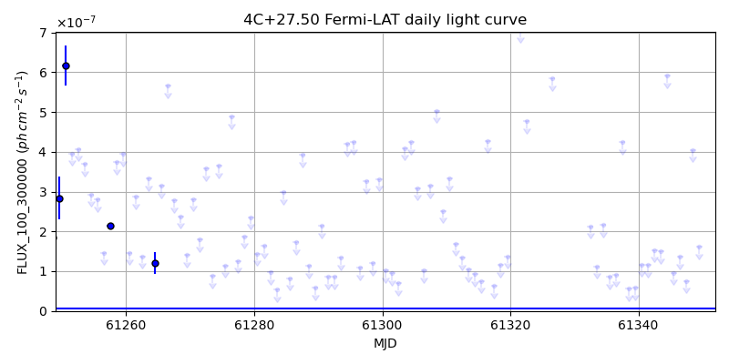
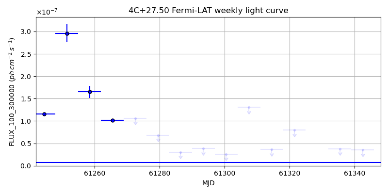
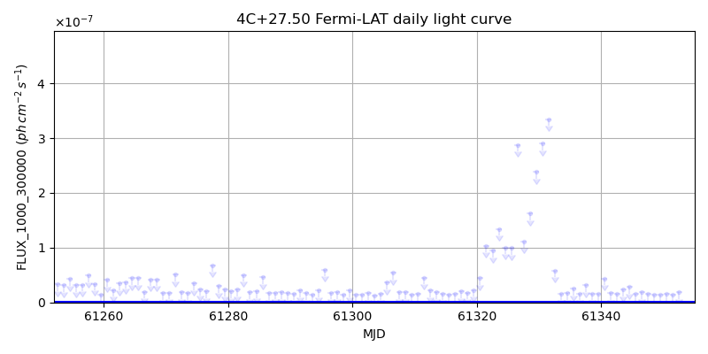
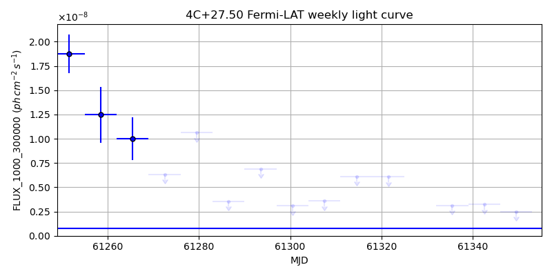

LAT Lightcurve site: https://fermi.gsfc.nasa.gov/ssc/data/access/lat/msl_lc/source/4C_p27d50
NED: Query
Time of last update of this page: UT: 2026-11-13 16:31 (MJD: 61357.688)
| Property | Value |
|---|---|
| R.A. | 23:21:59.76 |
| Dec. | 27:32:45.6 |
| z | 1.255 |
| 3FGL SpectrumType | PowerLaw |
| 3FGL PL Index | 2.28 |
| 3FGL Flux_100_300000 | 1.52e-08 1 / (s cm2) |
| 3FGL Flux_1000_300000 | 7.91e-10 1 / (s cm2) |
| 3FGL Flux >200 GeV | 8.84e-13 1 / (s cm2) |
| 3FGL Extrap. Crab >200 GeV | 0.00 |
| 3FGL Flux After EBL Absorption >200GeV | 4.15e-15 1 / (s cm2) |
| 3FGL EBL Crab Fraction >200GeV | 0.00 |

| MJD | dMJD | Flux | dFlux | Frac3FGL | FracCrab>200GeV | EBLFracCrab>200GeV |
|---|---|---|---|---|---|---|
| 61348.50 | 0.50 | 4.05e-07 | 0.00e+00 | 0.00 | 0.00 | 0.00 |
| 61349.50 | 0.50 | 1.61e-07 | 0.00e+00 | 0.00 | 0.00 | 0.00 |
| 61350.50 | 0.50 | 3.79e-07 | 0.00e+00 | 0.00 | 0.00 | 0.00 |
| 61351.50 | 0.50 | 1.15e-07 | 0.00e+00 | 0.00 | 0.00 | 0.00 |
| 61352.50 | 0.50 | 2.12e-07 | 0.00e+00 | 0.00 | 0.00 | 0.00 |

| MJD | dMJD | Flux | dFlux | Frac3FGL | FracCrab>200GeV | EBLFracCrab>200GeV |
|---|---|---|---|---|---|---|
| 61321.50 | 3.50 | 7.97e-08 | 0.00e+00 | 0.00 | 0.00 | 0.00 |
| 61328.50 | 3.50 | 6.09e-07 | 0.00e+00 | 0.00 | 0.00 | 0.00 |
| 61335.50 | 3.50 | 3.82e-08 | 0.00e+00 | 0.00 | 0.00 | 0.00 |
| 61342.50 | 3.50 | 3.56e-08 | 0.00e+00 | 0.00 | 0.00 | 0.00 |
| 61349.50 | 3.50 | 1.50e-07 | 0.00e+00 | 0.00 | 0.00 | 0.00 |

| MJD | dMJD | Flux | dFlux | Frac3FGL | FracCrab>200GeV | EBLFracCrab>200GeV |
|---|---|---|---|---|---|---|
| 61348.50 | 0.50 | 1.48e-08 | 0.00e+00 | 0.00 | 0.00 | 0.00 |
| 61349.50 | 0.50 | 1.40e-08 | 0.00e+00 | 0.00 | 0.00 | 0.00 |
| 61350.50 | 0.50 | 1.50e-08 | 0.00e+00 | 0.00 | 0.00 | 0.00 |
| 61351.50 | 0.50 | 1.34e-08 | 0.00e+00 | 0.00 | 0.00 | 0.00 |
| 61352.50 | 0.50 | 1.88e-08 | 0.00e+00 | 0.00 | 0.00 | 0.00 |

| MJD | dMJD | Flux | dFlux | Frac3FGL | FracCrab>200GeV | EBLFracCrab>200GeV |
|---|---|---|---|---|---|---|
| 61321.50 | 3.50 | 6.08e-09 | 0.00e+00 | 0.00 | 0.00 | 0.00 |
| 61328.50 | 3.50 | 4.83e-08 | 0.00e+00 | 0.00 | 0.00 | 0.00 |
| 61335.50 | 3.50 | 3.14e-09 | 0.00e+00 | 0.00 | 0.00 | 0.00 |
| 61342.50 | 3.50 | 3.26e-09 | 0.00e+00 | 0.00 | 0.00 | 0.00 |
| 61349.50 | 3.50 | 2.49e-09 | 0.00e+00 | 0.00 | 0.00 | 0.00 |
--------------------------------------------------------- Using user-supplied coords: 23:21:59.76 27:32:45.6 2000 --------------------------------------------------------- FLWO UT night of: 2026-11-14 Local Sid. @ Midnight: 03:09 Sunset (-15.0) (local, UT): 18:35 01:35 Sunrise (-15.0) (local, UT): 05:42 12:42 Moonrise (local, UT): Moonset (local, UT): 20:50 03:50 Moon phase: 0.22 --------------------------------------------------------- AzTime LSID UT Obj_el Obj_az Mn_el Mn_az Sep. --------------------------------------------------------- 18:35 21:44 01:35 68.1 94.1 20.1 218.2 83.0 19:05 22:14 02:05 74.5 100.4 16.0 223.7 82.9 19:35 22:44 02:35 80.6 112.6 11.6 228.6 82.7 20:05 23:14 03:05 85.6 153.1 6.9 233.2 82.5 20:35 23:44 03:35 83.9 230.3 2.0 237.3 82.3 21:05 00:14 04:05 78.2 253.5 -2.2 241.2 82.0 21:35 00:44 04:35 72.0 262.5 -9.0 244.8 81.8 22:05 01:14 05:05 65.6 267.8 -14.6 248.2 81.6 22:35 01:44 05:35 59.2 271.8 -20.4 251.4 81.3 23:05 02:14 06:05 52.8 275.2 -26.2 254.5 81.0 23:35 02:44 06:35 46.4 278.3 -32.1 257.5 80.8 00:05 03:14 07:05 40.1 281.2 -38.1 260.6 80.5 00:35 03:45 07:35 33.9 284.1 -44.2 263.8 80.2 01:05 04:15 08:05 27.7 287.0 -50.2 267.1 79.9 01:35 04:45 08:35 21.7 290.0 -56.3 270.9 79.6 02:05 05:15 09:05 15.8 293.2 -62.4 275.3 79.3 02:35 05:45 09:35 10.0 296.5 -68.4 281.1 79.0 03:05 06:15 10:05 4.4 300.1 -74.2 289.9 78.7 03:35 06:45 10:35 -0.5 304.0 -79.6 306.2 78.4 04:05 07:15 11:05 -6.2 308.2 -83.2 343.5 78.1 04:35 07:45 11:35 -11.2 312.8 -82.1 35.1 77.8 05:05 08:15 12:05 -15.7 317.8 -77.4 61.2 77.5 05:35 08:45 12:35 -19.8 323.4 -71.8 73.4 77.3 05:42 08:52 12:42 -20.6 324.6 -70.5 75.2 77.2 --------------------------------------------------------- Dark hours >55 deg.: 2.08 srcstart (UT): 2026-11-14 03:50 srcend (UT): 2026-11-14 05:54